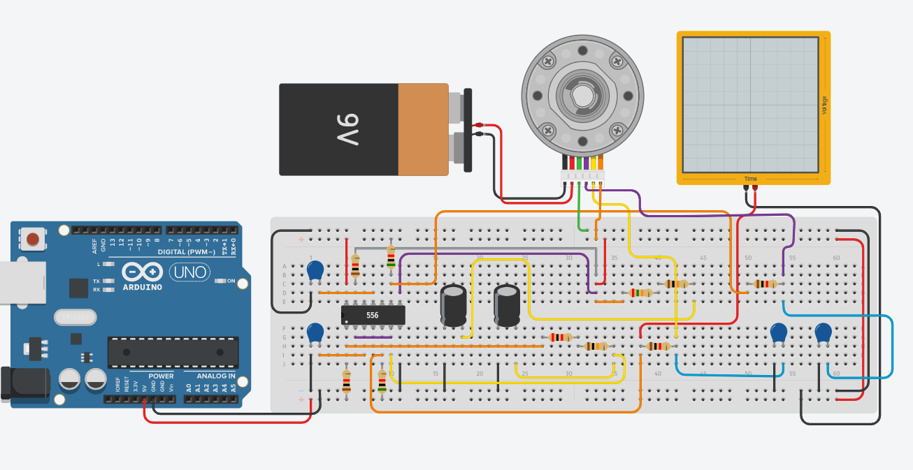

Кода не требуется.
Arduino и 556
сделают все за вас.
Требования:
- 1 батарея 9 В
- 1 двигатель постоянного тока с энкодером (белый)
- 1 осциллограф с продолжительностью 150ms
- 2 поляризованных конденсатора на 10µF и напряжением 16V
- 4 конденсатора на 0.01µF
- 4 резистора на 1kΩ
- 2 резистора на 5kΩ
- 1 резистор на 2kΩ
- 1 резистор на 25kΩ
- 2 резистора на 10kΩ
- 1 556
Результат:
Мотор набирает скорость,
разогревается и двигается с
постоянной скоростью.
Кол-Во тестов - 2.

Обратно